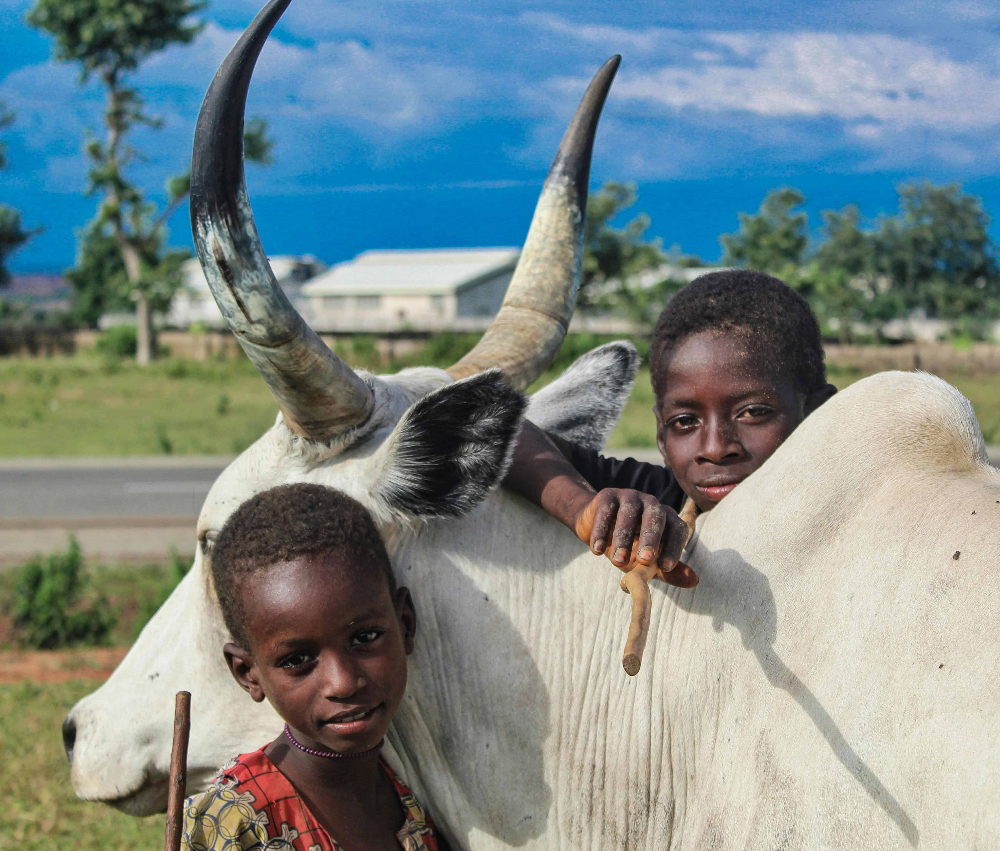

Overview
This project focuses on developing strategies to enhance pastoralist resilience in dry seasons, improving livestock productivity and pastoralist well-being.
Objectives
- Assess the impacts of drought on pastoralist livelihoods.
- Develop and promote drought-tolerant livestock breeds.
- Improve access to water and fodder resources.
Outcomes
The project aims to increase livestock productivity, improve pastoralist income, and enhance their overall well-being, ultimately contributing to sustainable development in dryland ecosystems.
